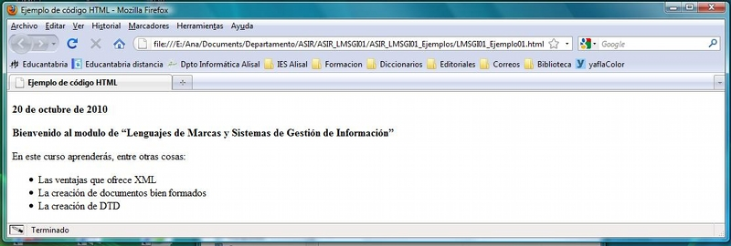
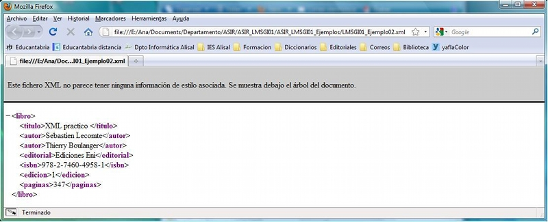
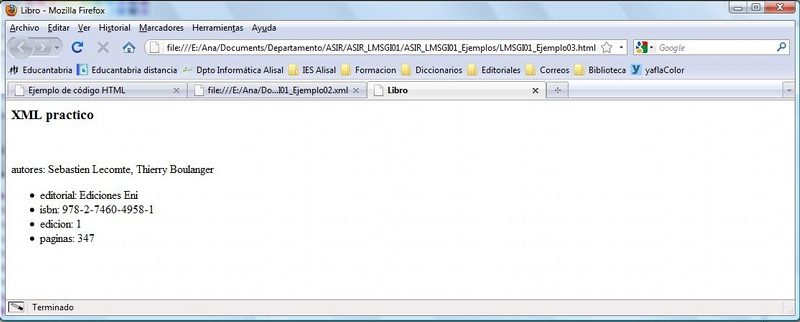
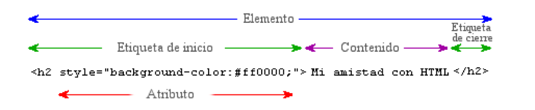
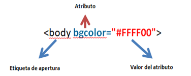
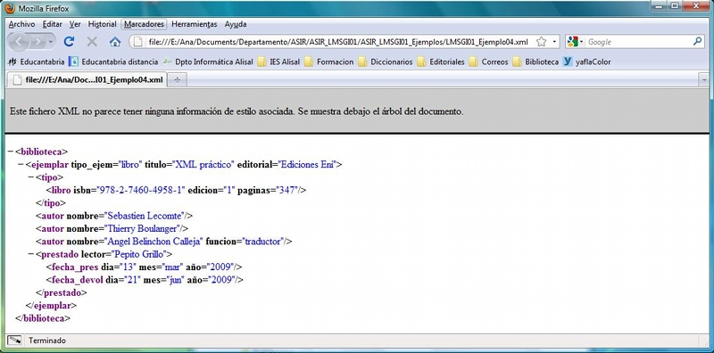

Un "lenguaje de marcas" es un modo de codificar un documento donde, junto con el texto, se incorporan etiquetas, marcas o anotaciones con información adicional relativa a la estructura del texto o su formato de presentación. Permiten hacer explícita la estructura de un documento, su contenido semántico o cualquier otra información lingüística o extralingüística que se quiera hacer patente.
Todo lenguaje de marcas está definido en un documento denominado DTD (Document Type Definition). En él se establecen las marcas, los elementos utilizados por dicho lenguaje y sus correspondientes etiquetas y atributos, su sintaxis y normas de uso.
Ejemplo
Aspecto de un documento realizado con un lenguaje de marcas:
<carta>
<fecha>22/11/2006</fecha>
<presentacion>Estimado cliente:</presentacion>
<contenido>bla bla bla bla …</contenido>
<firma>Don José Gutiérrez González</firma>
</carta>
Aunque en la práctica, en un mismo documento pueden combinarse varios tipos diferentes de lenguajes de marca los lenguajes de marcas, éstos se pueden clasificar como sigue:
Algunos ejemplos de lenguajes de marcado agrupados por su ámbito de utilización son:
En los años 70 continúa surgen unos lenguajes informáticos, distintos de los lenguajes de programación, orientados a la gestión de información. Con el desarrollo de los editores y procesadores de texto surgen los primeros lenguajes informáticos especializados en tareas de descripción y estructuración de información: los lenguajes de marcas. Paralelamente, también, surgen otros lenguajes informáticos orientados a la representación, almacenamiento y consulta eficiente de grandes cantidades de datos: lenguajes y sistemas de bases de datos.
Los lenguajes de marcas surgieron, inicialmente, como lenguajes formados por el conjunto de códigos de formato que los procesadores de texto introducen en los documentos para dirigir el proceso de presentación (impresión) mediante una impresora. Como en el caso de los lenguajes de programación, inicialmente estos códigos de formato estaban ligados a las características de una máquina, programa o procesador de textos concreto y, en ellos, inicialmente no había nada que permitiese al programador (formateador de documentos en este caso) abstraerse de las características del procesador de textos y expresar de forma independiente a éste la estructura y la lógica interna del documento.
Ejemplo
Código de marcas anterior a GML. Las etiquetas son de invención propia.
Dado el siguiente documento:
<times 14><color verde><centrado> Este texto es un ejemplo para mostrar la utilización primitiva de las marcas</centrado></color></times 14>
<color granate><times 10><cursiva>Para realizar este ejemplo se utilizan etiquetas de nuestra invención. </cursiva>
Las partes importantes del texto pueden resaltarse usando la
<negrita>negrita</negrita>, o el <subrayar>subrayado</subrayar></times 10></color>
Al imprimirlo se obtendría:
Este texto es un ejemplo para mostrar la utilización primitiva de las marcas
Para realizar este ejemplo se utilizan etiquetas de nuestra invención. Las partes importantes del texto pueden resaltarse usando la negrita, o el subrayado.
Posteriormente, se añadieron como medio de presentación a la pantalla. Los códigos de estilo de visualización anteriores ya no aparecen, y se emplean otros medios para marcados, distintos de la inclusión a mano de cadenas formateadoras, ahora ese proceso se automatiza y basta pulsar una combinación de teclas, o pulsar un botón, para lograr los resultados requeridos. Aunque esto es sólo una abstracción, para su uso interno las aplicaciones siguen utilizando marcas para delimitar aquellas partes del texto que tienen un formato especial.
Este marcado estaba exclusivamente orientado a la presentación de la información, aunque pronto se percataron de las posibilidades del marcado y le dieron nuevos usos que resolvían una gran variedad de necesidades, apareció el formato generalizado.
Uno de los problemas que se conocen desde hace décadas en la informática es la falta de estandarización en los formatos de información usados por los distintos programas y sistemas operativos que provocaba que el mismo archivo se viera de diferentes modos según con que programas se abra.
Para resolver este problema, en los años sesenta IBM encargó a Charles F. Goldfab la construcción de un sistema de edición, almacenamiento y búsqueda de documentos legales. Tras analizar el funcionamiento de la empresa llegaron a la conclusión de que para realizar un buen procesado informático de los documentos había que establecer un formato estándar para todos los documentos que se manejaban en la empresa. Con ello se lograba gestionar cualquier documento en cualquier departamento y con cualquier aplicación, sin tener en cuenta dónde ni con qué se generó el documento. Dicho formato tenía que ser válido para los distintos tipos de documentos legales que utilizaba la empresa, por tanto, debía ser flexible para que se pudiera ajustar a las distintas situaciones.
El formato de documentos que se creó como resultado de este trabajo fue GML, cuyo objetivo era describir los documentos de tal modo que el resultado fuese independiente de la plataforma y la aplicación utilizada.
El formato GML evolucionó hasta que en 1986 dio lugar al estándar ISO 8879 que se denominó SGML. Éste era un lenguaje muy complejo y requería de unas herramientas de software caras. Por ello su uso ha quedado relegado a grandes aplicaciones industriales.
El marcado de estos documentos no indica nada acerca de cómo representar en papel o pantalla el contenido. Por tanto, este estándar simplemente se encarga de que su contenido sea legible por todos los sistemas, pero no así su apariencia.
Ejemplo
Documento SGML sencillo:
<email>
<remitente>
<persona>
<nombre> Pepito </nombre>
<apellido> Grillo </apellido>
</persona>
</remitente>
<destinatario>
<direccion> pinocho@hotmail.com </direccion>
</destinatario>
<asunto>¿quedamos?</asunto>
<mensaje> Hola, he visto que ponen esta noche la película que querías ver. ¿Te apetece ir?</mensaje>
</email>
En 1989/90 Tim Berners-Lee creó el World Wide Web y se encontró con la necesidad de organizar, enlazar y compatibilizar gran cantidad de información procedente de diversos sistemas. Para resolverlo creó un lenguaje de descripción de documentos llamado HTML, que, en realidad, era una combinación de dos estándares ya existentes:
HTML es una versión simplificada de SGML, ya que sólo se utilizaban las instrucciones absolutamente imprescindibles. Era tan fácil de comprender que rápidamente tuvo gran aceptación logrando lo que no pudo SGML, HTML se convirtió en un estándar general para la creación de páginas web. Además, tanto las herramientas de software como los navegadores que permiten visualizar páginas HTML son cada vez mejores.
A pesar de todas estas ventajas HTML no es un lenguaje perfecto, sus principales desventajas son:
Gracias a la especificación de HTML 5, ésta ha dado un salto evolutivo muy grande, pues permite, entre otras muchas cosas, generar animaciones.
Ejemplo
Documento HTML
Al publicarlo en un navegador, por ejemplo en el Firefox, tendríamos:
<html>
<head>
<title> Ejemplo de código HTML</title>
</head>
<body bgcolor="#ffffff">
<p></p>
<p>
<b>20 de octubre de 2010</b>
</p>
<p><b> Bienvenido al módulo de “Lenguajes de Marcas y Sistemas de Gestión de
Información” </b></p>
<p> En este curso aprenderás, entre otras cosas:<br/>
<ul>
<li>Las ventajas que ofrece XML </li>
<li>La creación de documentos bien formados </li>
<li>La creación de DTD</li>
</ul>
</p>
</body>
</html>

Para saber más
Si quieres saber más sobre HTML5 accede a este enlace:
XML, siglas en inglés de eXtensible Markup Language ('lenguaje de marcas extensible'), es un lenguaje de marcas desarrollado por el World Wide Web Consortium (W3C) utilizado para almacenar datos en forma legible. Deriva del lenguaje SGML.
Para resolver estos problemas de HTML el W3C establece, en 1998, el estándar internacional XML, un lenguaje de marcas puramente estructural que no incluye ninguna información relativa al diseño. Está convirtiéndose con rapidez en estándar para el intercambio de datos en la Web. A diferencia de HTML las etiquetas indican el significado de los datos en lugar del formato con el que se van a visualizar los datos.
XML es un metalenguaje caracterizado por:
En realidad, XML es un conjunto de estándares relacionados entre sí y que son:
Ejemplo
Documento XML
<?xml version="1.0" encoding="iso-8859-1"?>
<!DOCTYPE biblioteca">
<biblioteca>
<ejemplar tipo_ejem="libro" titulo="XML practico" editorial="Ediciones Eni">
<tipo> <libro isbn="978-2-7460-4958-1" edicion="1" paginas="347"></libro> </tipo>
<autor nombre="Sebastien Lecomte"></autor>
<autor nombre="Thierry Boulanger"></autor>
<autor nombre="Ángel Belinchon Calleja" funcion="traductor"></autor>
<prestado lector="Pepito Grillo">
<fecha_pres dia="13" mes="mar" año="2009"></fecha_pres>
<fecha_devol dia="21" mes="jun" año="2009"></fecha_devol>
</prestado>
</ejemplar>
<ejemplar tipo_ejem="revista" titulo="Todo Linux 101. Virtualización en GNU/Linux" editorial="Studio Press">
<tipo>
<revista>
<fecha_publicacion mes="abr" año="2009"></fecha_publicacion>
</revista>
</tipo>
<autor nombre="Varios"></autor>
<prestado lector="Pedro Picapiedra">
<fecha_pres dia="12" mes="ene" año="2010"></fecha_pres>
</prestado>
</ejemplar>
</biblioteca>
| XML | HTML |
|---|---|
| Es un perfil de SGML. | Es una aplicación de SGML. |
| Especifica cómo deben definirse conjuntos de etiquetas aplicables a un tipo de documento. | Aplica un conjunto limitado de etiquetas sobre un único tipo de documento. |
| Modelo de hiperenlaces complejo. | Modelo de hiperenlaces simple. |
| El navegador es una plataforma para el desarrollo de aplicaciones. | El navegador es un visor de páginas. |
| Fin de la guerra de los navegadores y etiquetas propietarias. | El problema de la 'no compatibilidad' y las diferencias entre navegadores ha alcanzado un punto en el que la solución es difícil. |
Ejemplo
Fichero XML.
<?xml version="1.0" encoding="iso-8859-1"?>
<!DOCTYPE libro>
<libro>
<titulo>XML practico </titulo>
<autor>SebastienLecomte</autor>
<autor>Thierry Boulanger</autor>
<editorial>Ediciones Eni</editorial>
<isbn>978-2-7460-4958-1</isbn>
<edicion>1</edicion>
<paginas>347</paginas>
<libro>
Al interpretar este fichero con un navegador, por ejemplo, Mozilla, se obtiene:

Fichero HTML
<html>
<head>
<title>Libro</title>
</head>
<body>
<h3>XML practico</h3><br>
<p>autores: Sebastien Lecomte,
Thierry Boulanger</p>
<ul>
<li>editorial: Ediciones Eni</li>
<li>isbn:978-2-7460-4958-1</li>
<li>edicion: 1 </li>
<li>paginas: 347</li>
</ul>
</body>
</html>
Al interpretarlo con el navegador Mozilla Firefox tendremos:

| XML | SGML |
|---|---|
| Su uso es sencillo. | Su uso es muy complejo. |
| Trabaja con documentos bien formados , no exige que estén validados. | Sólo trabaja con documentos válidos . |
| Facilita el desarrollo de aplicaciones de bajo coste. | Su complejidad hace que las aplicaciones informáticas para procesar SGML sean muy costosas. |
| Es muy utilizado en informática y en más áreas de aplicación. | Sólo se utiliza en sectores muy específicos. |
| Compatibilidad e integración con HTML. | No hay una compatibilidad con HTML definida. |
| Formateo y estilos fáciles de aplicar. | Formateo y estilos relativamente complejos. |
| No usa etiquetas opcionales. |
Autoevaluación
¿Cuáles son las características comunes de XML y SGML?
Guardan el formato de un documento.
Guardan la estructura lógica de los documentos.
Guardan los documentos en el formato universal txt.
Guardan el formato de los documentos independientemente de la
plataforma.
Para saber más
La recomendación de XML publicada por el W3C es pública y accesible en:
Los lenguajes de marcas utilizan una serie de etiquetas especiales intercaladas en un documento de texto sin formato. Dichas etiquetas serán posteriormente interpretadas por los intérpretes del lenguaje y ayudan al procesado del documento.
Las etiquetas se escriben encerradas entre ángulos, es decir < y >. Normalmente, se utilizan dos etiquetas: una de inicio y otra de fin para indicar que ha terminado el efecto que queríamos presentar. La única diferencia entre ambas es que la de cierre lleva una barra inclinada "/" antes del código.
<etiqueta>texto que sufrirá las consecuencias de la etiqueta</etiqueta>
Ejemplo
Por ejemplo, en HTML
<u>Esto está subrayado</u>
Al interpretarlo en un navegador se verá así:
Esto está subrayado
Las últimas especificaciones emitidas por el W3C indican la necesidad de que vayan escritas siempre en minúsculas para considerar que el documento está correctamente creado.
De todos modos, HTML no es tan restrictivo y existen etiquetas con <br> o <img> que no necesitan de una etiqueta de cierre.
Para saber más
Los chicos de Smashing Magazine publicaron esta práctica hoja para imprimir trucos HTML5, que resume y enumera todas las etiquetas soportadas actualmente, sus descripciones, atributos y su apoyo en HTML 4.
Para trabajar en XML es necesario editar los documentos y luego procesarlos, por tanto tenemos dos tipos de herramientas:
Autoevaluación
Para crear documentos XML es necesario:
Software especializado para la tecnología XML.
Herramientas de validación de XML.
Un block de notas y un navegador.
Al menos, un editor XML.
Para saber más
Información sobre analizadores XML:
http://xml.coverpages.org/index.html
Algunos de los analizadores disponibles están en los enlaces siguientes:
http://www.jclark.com/xml/expat.html
El XML, o Lenguaje de Etiquetas Extendido, es lenguaje de etiquetas, creadas por el programador, que estructuran y guardan de forma ordenada la información. No representa datos por sí mismo, solamente organiza la estructura.
El XML ahorra tiempos de desarrollo y proporciona ventajas, dotando a webs y a aplicaciones de una forma realmente potente de guardar la información. Además, se ha convertido en un formato universal que ha sido asimilado por todo tipo de sistemas operativos y dispositivos móviles.
Al igual que en HTML un documento XML es un documento de texto, en este caso con extensión ".xml", compuesto de parejas de etiquetas, estructuradas en árbol, que describen una función en la organización del documento, que puede editarse con cualquier editor de texto y que es interpretado por los navegadores Web.
Las características básicas de XML son:
El proceso de creación de un documento XML pasa por varias etapas en las que el éxito de cada una de ellas se basa en la calidad de la anterior. Estas etapas son:
El marcado en XML son etiquetas que se añaden a un texto para estructurar el contenido del documento. Esta información extra permite a los ordenadores "interpretar" los textos. El marcado es todo lo que se sitúa entre los caracteres "<" y ">" o "&" y ";"
Los datos carácter son los que forman la verdadera información del documento XML.
El marcado puede ser tan rico como se quiera. Puede ser interesante detectar necesidades futuras y crear documentos con una estructura fácilmente actualizables.
Los documentos XML pueden tener comentarios, que no son interpretados por el intérprete XML. Estos se incluyen entre las cadenas "<!-" y "-->", pueden estar en cualquier posición en el documento salvo:
Los documentos XML pueden estar formados por una parte opcional llamada prólogo y otra parte obligatoria llamada ejemplar.
El XML, a diferencia del HTML, es "case sensitive", es decir, trata a las mayúsculas y las minúsculas como caracteres diferentes. Por ejemplo, si un elemento de XML está definido como "Etiqueta", no podemos usar "etiqueta" para referirnos a él.
Para saber más
A continuación se muestra un ejemplo para entender la estructura de un documento XML:
Ya sabes que la etiqueta consiste en una marca hecha en el documento, que señala una porción de éste como un elemento. Un pedazo de información con un sentido claro y definido. Las etiquetas tienen la forma <nombre>, donde nombre es el nombre del elemento que se está señalando.
<?xml version="1.0" encoding="UTF-8" ?>
<!DOCTYPE Edit_Mensaje SYSTEM "Edit_Mensaje.dtd">
<Edit_Mensaje>
<Mensaje>
<Remitente>
<Nombre>Nombre del remitente</Nombre>
<Mail> Correo del remitente </Mail>
</Remitente>
<Destinatario>
<Nombre>Nombre del destinatario</Nombre>
<Mail>Correo del destinatario</Mail>
</Destinatario>
<Texto>
<Asunto>
Este es mi documento con una estructura muy sencilla
no contiene atributos ni entidades...
</Asunto>
<Parrafo>
Este es mi documento con una estructura muy sencilla
no contiene atributos ni entidades...
</Parrafo>
</Texto>
</Mensaje>
</Edit_Mensaje>
Si se incluye, el prólogo debe preceder al ejemplar del documento. Su inclusión facilita el procesado de la información del ejemplar. El prólogo está dividido en dos partes:
<?xml versión= “1.0” ?>
<?xml versión= “1.0” encoding=”iso-8859-1” ?>
| Estándar ISO | Código de país |
|---|---|
| UTF-8 ( Unicode) | Conjunto de caracteres universal |
| ISO -8859-1 (Latin-1) | Europa occidental, Latinoamérica |
| ISO -8859-2 (Latin-2) | Europa central y oriental |
| ISO -8859-3 (Latin-3) | Sudoeste de Europa |
| ISO -8859-4 (Latin-4) | Países Escandinavos, Bálticos |
| ISO -8859-5 | Cirílico |
| ISO -8859-6 | Árabe |
| ISO -8859-7 | Griego |
| ISO -8859-8 | Hebreo |
| ISO -8859-9 | Turco |
| ISO-8859-10 | Lapón. Nórdico, esquimal |
| EUC-JP oder Shitf_JIS | Japonés |
<?xml versión= “1.0” encoding=”iso-8859-1” standalone=”no” ?>
En este caso, el documento es independiente, de no ser así el atributo standalone hubiese tomado el valor "yes".<!DOCTYPE Nombre_tipo ...>
Es la parte más importante de un documento XML, ya que contiene los datos reales del documento. Está formado por elementos anidados.
Los elementos son los distintos bloques de información que permiten definir la estructura de un documento XML. Está, delimitados por una etiqueta de apertura y una etiqueta de cierre. A su vez los elementos pueden estar formados por otros elementos y/o por atributos.
Por lo general, todo elemento se compone de una etiqueta de inicio, sin atributos o con uno o más atributos, el contenido correspondiente y una etiqueta de cierre. Así de sencillo. Observa la imagen siguiente que muestra un ejemplo explicativo de la estructura de un elemento:

Ejemplo
Sea el siguiente código XML
<?xml version="1.0" encoding="iso-8859-1"?>
<!DOCTYPE libro>
<libro>
<titulo>XML practico </titulo>
<autor>Sebastien Lecomte</autor>
<autor>Thierry Boulanger</autor>
<editorial>Ediciones Eni</editorial>
<isbn>978-2-7460-4958-1</isbn>
<edicion>1</edicion>
<paginas>347</paginas>
<libro>
El ejemplar es el elemento <libro>, que a su vez está compuesto de los elementos <autor>, <editorial>, <isbn>, <edicion> y <paginas>.
En realidad, el ejemplar es el elemento raíz de un documento XML. Todos los datos de un documento XML han de pertenecer a un elemento del mismo.
Los nombres de las etiquetas han de ser auto descriptivos, lo que facilita el trabajo que se hace con ellas.
La formación de elementos ha de cumplir ciertas normas para que queden perfectamente definidos y que el documento XML al que pertenecen pueda ser interpretado por los procesadores XML sin generar ningún error fatal. Dichas reglas son:
| Carácter | Cadena |
|---|---|
| > | > |
| < | < |
| & | & |
| " | " |
| ' | ' |
Debes conocer
En el siguiente enlace encontrarás una tabla con los caracteres ASCII, el nombre HTML, y el número HTML de cada uno de ellos que te será imprescindible a la hora de realizar documentos en HTML y XML.
Permiten añadir propiedades a los elementos de un documento.
Los atributos se incluyen siempre dentro de la etiqueta de inicio y llevan inmediatamente detrás el signo de igual ("=") con los valores de dichos atributos entre comillas (""). El punto y coma que sigue al atributo se usa para separar los diferentes comandos de estilo.

Los atributos no pueden organizarse en ninguna jerarquía, no pueden contener ningún otro elemento o atributo y no reflejan ninguna estructura lógica.
No se debe utilizar un atributo para contener información susceptible de ser dividido.
Por ejemplo, usarás con frecuencia atributos en la etiqueta body, mientras que, por ejemplo, raras veces usarás atributos en la etiqueta br, ya que un salto de línea es un salto de línea que no tiene parámetros que ajustar.
Al igual que existen muchos elementos, existen también muchos y diferentes atributos. Algunos atributos están hechos a la medida para un elemento concreto, mientras que otros se pueden usar para muchos elementos diferentes. Y viceversa: algunos elementos sólo pueden contener un tipo de atributo mientras otros pueden contener muchos.
Por ejemplo, un elemento «estudiante» puede tener un atributo «Mario» y un atributo «tipo», con valores «come croquetas» y «taleno» respectivamente.
<Estudiante Mario="come croquetas" tipo="taleno">Esto es un día que Mario va paseando…</Estudiante>
Ejemplo
Dado el siguiente código XML:
<?xml version="1.0" encoding="iso-8859-1" standalone="yes" ?
<!DOCTYPE biblioteca >
<biblioteca>
<ejemplar tipo_ejem="libro" titulo="XML práctico" editorial="Ediciones Eni">
<tipo> <libro isbn="978-2-7460-4958-1" edicion="1" paginas="347"></libro> </tipo>
<autor nombre="Sebastien Lecomte"></autor>
<autor nombre="Thierry Boulanger"></autor>
<autor nombre="Angel Belinchon Calleja" funcion="traductor"></autor>
<prestado lector="Pepito Grillo">
<fecha_pres dia="13" mes="mar" año="2009"></fecha_pres>
<fecha_devol dia="21" mes="jun" año="2009"></fecha_devol>
</prestado>
</ejemplar>
</biblioteca>
Al abrir el documento anterior con el navegador Firefox obtenemos:

Vemos que los elementos aparecen coloreados en ciruela, los nombres de los atributos en negro y sus valores en azul.
Como se observa en el ejemplo, los atributos se definen y dan valor dentro de una etiqueta de inicio o de elemento vacío, a continuación del nombre del elemento o de la definición de otro atributo siempre separado de ellos por un espacio. Los valores del atributo van precedidos de un igual que sigue al nombre del mismo y tienen que definirse entre comillas simples o dobles.
Los nombres de los atributos han de cumplir las mismas reglas que los de los elementos, y no pueden contener el carácter menor que, <.
Para saber más
Para saber y practicar sobre los atributos puedes consultar esta página que muestra numerosos ejemplos:
Todos los documentos XML deben verificar las reglas sintácticas que define la recomendación del W3C para el estándar XML. Esas normas básicas son:
Permiten definir la pertenencia de los elementos y los atributos de un documento XML al contexto de un vocabulario XML. De este modo se resuelven las ambigüedades que se pueden producir al juntar dos documentos distintos, de dos autores diferentes, que han utilizado el mismo nombre de etiqueta para representar cosas distintas.
Los espacios de nombres también conocidos como name spaces, permiten dar un nombre único a cada elemento, indexándolos según el nombre del vocabulario adecuado además están asociados a un URI que los identifica de forma única.
En el documento, las etiquetas ambiguas se sustituyen por otras en las que el nombre del elemento está precedido de un prefijo, que determina el contexto al que pertenece la etiqueta, seguido de dos puntos, :. Esto es:
<prefijo:nombre_etiqueta></prefijo:nombre_etiqueta>
Esta etiqueta se denomina "nombre cualificado". Al definir el prefijo hay que tener en cuenta que no se pueden utilizar espacios ni caracteres espaciales y que no puede comenzar por un digito.
Antes de poder utilizar un prefijo de un espacio de nombres, para resolver la ambigüedad de dos o más etiquetas, es necesario declarar el espacio de nombres, es decir, asociar un índice con el URI asignado al espacio de nombres, mediante un atributo especial xmlns. Esto se hace entre el prólogo y el ejemplar de un documento XML y su sintaxis es la siguiente:
<conexion>://<direccionservidor>/<apartado1>/<apartado2>/...
Los espacios de nombres permiten utilizar etiquetas idénticas para estructurar distintos tipos de información de texto.
Ejemplo
Sean los documentos XML que organizan la información sobre los profesores y los alumnos del DAW respectivamente:
<?xml version="1.0" encoding="iso-8859-1" standalone="yes"
<!DOCTYPE alumnos>
<alumnos>
<nombre>Fernando Fernández González</nombre>
<nombre>Isabel González Fernández</nombre>
<nombre>Ricardo Martínez López</nombre>
</alumnos>
<?xml version="1.0" encoding="iso-8859-1" standalone="yes" ?>
<!DOCTYPE profesores>
<profesores>
<nombre>Pilar Ruiz Pérez</nombre>
<nombre>Tomás Rodríguez Hernández</nombre>
</profesores>
Al hacer un documento sobre los miembros del curso DAW no se distinguirían los profesores de los alumnos, para resolverlo definiremos un espacio de nombres para cada contexto:
<?xml version="1.0" encoding="iso-8859-1" standalone="yes" ?>
<!DOCTYPE miembros>
<alumnos xlmns:alumnos=”http://DAW/alumnos”>
<profesores xlmns:profesores=”http://DAW/profesores”>
<asistentes>
<alumnos:nombre>Fernando Fernández González</alumnos:nombre>
<alumnos:nombre>Isabel González Fernández</alumnos:nombre>
<alumnos:nombre>Ricardo Martínez López</alumnos:nombre>
<profesores:nombre>Pilar Ruiz Pérez</profesores:nombre>
<profesores:nombre>Tomás Rodríguez Hernández</profesores:nombre>
</asistentes>
Para saber más
Los espacios de nombres tienen una recomendación en XML:
Puede que algo se nos haya pasado. Puede que no esté claro o que necesite alguna actualización o añadido. No lo dudes y hazlo saber.